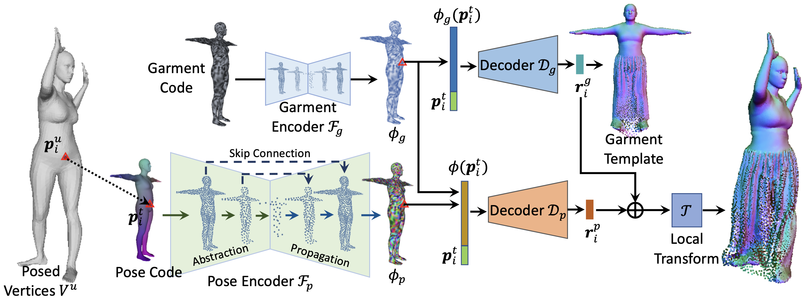
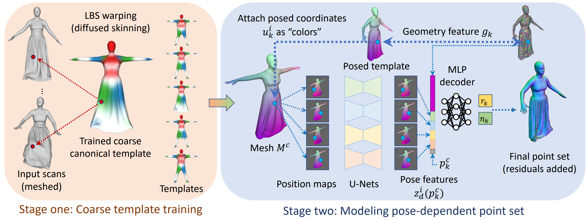
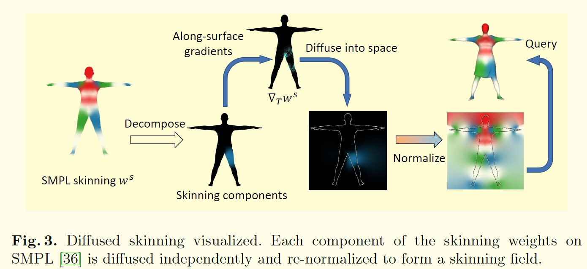
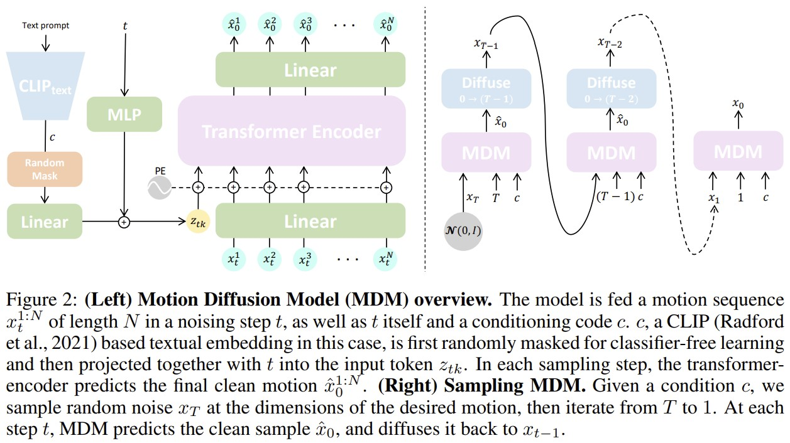

Blog Human Shape Reconstruction
Contents
From Pointcloud
[CVPR 2023] CloSET: Modeling Clothed Humans on Continuous Surface with Explicit Template Decomposition [pdf]
Hongwen Zhang, Siyou Lin, Ruizhi Shao, Yuxiang Zhang, Zerong Zheng, Han Huang, Yandong Guo, Yebin Liu

- In this paper, we revisit point-based solutions and propose to decompose explicit garment-related templates
and then add pose-dependent wrinkles to them.
- Additionally, to tackle the seam artifact issues in recent state-of-the-art point-based methods, we propose
to learn point features on a body surface, which establishes a continuous and compact feature space to
capture the fine-grained and pose-dependent clothing geometry.
- In THuman-CloSET, there are more than 2,000 scans of 15 outfits with a large variation in clothing style,
including T-shirts, pants, skirts, dresses, jackets, and coats, to name a few.
[NeurIPS 2021] Garment4D: Garment Reconstruction from Point Cloud Sequences [pdf][code]
Fangzhou Hong, Liang Pan, Zhongang Cai, Ziwei Liu

- we propose a principled framework, Garment4D, that uses 3D point cloud sequences of dressed humans for
garment reconstruction.
- Firstly, 3D inputs eliminate scale and pose ambiguities that are difficult to avoid when using 2D images.
Secondly, exploiting temporal information is important for garment dynamics capturing, at which there are
few attempts. Thirdly, recent development in 3D sensors (e.g. LiDAR) has reduced the cost and difficulties
in obtaining point clouds, which makes it easier to leverage 3D point clouds for research problems and
commercial applications.
- CLOTH3D is a large scale synthetic dataset with rich garment shapes and styles and abundant human pose
sequences. We sample point sets from 3D human models to produce the point cloud sequence inputs.
[ICCV 2021] The Power of Points for Modeling Humans in Clothing [pdf][code]
Qianli Ma, Jinlong Yang, Siyu Tang, Michael J. Black

[ECCV 2022] Learning Implicit Templates for Point-based Clothed Human Modeling [pdf][code]
Siyou Lin, Hongwen Zhang, Zerong Zheng, Ruizhi Shao, Yebin Liu


- Our framework first learns implicit surface templates representing the coarse clothing topology, and then
employs the templates to guide the generation of point sets which further capture pose-dependent clothing
deformations such as wrinkles.
- Our task is to learn animatable clothed human avatars with realistic posedependent clothing deformations
from a set of posed scans, under a multi-outfit setting.
[3DV 2022] Neural Point-based Shape Modeling of Humans in Challenging Clothing [pdf][code]
Qianli Ma, Jinlong Yang, Michael J. Black, Siyu Tang
[CVPR 2021] SCANimate: Weakly supervised learning of skinned clothed avatar networks [pdf]
Shunsuke Saito, Jinlong Yang, Qianli Ma, and Michael J Black
[back to top]
From Multi-view RGBD
[SIGGRAPH 2023] AvatarReX: Real-time Expressive Full-body Avatars [pdf]
Zerong Zheng, Xiaochen Zhao, Hongwen Zhang, Boning Liu, Yebin Liu
[ICCV 2021] DeepMultiCap: Performance Capture of Multiple Characters Using Sparse Multiview Cameras [pdf][code]
Yang Zheng, Ruizhi Shao, Yuxiang Zhang, Tao Yu, Zerong Zheng, Qionghai Dai, Yebin Liu.
- To tackle with the serious occlusion challenge for close interacting scenes, we combine a recently proposed
pixelaligned implicit function with parametric model for robust reconstruction of the invisible surface
areas.
- With estimated SMPL models and segmented multi-view, we design a spatial attentionaware network and temporal
fusion method to reconstruct each character separately.
[back to top]
From (multi-view) RGB<a name="RGB"></a>
[CVPR 2019] PIFu: Pixel-Aligned Implicit Function for High-Resolution Clothed Human Digitization [pdf]
Shunsuke Saito, Zeng Huang, Ryota Natsume, Shigeo Morishima, Angjoo Kanazawa, Hao Li
- We propose a new Pixel-aligned Implicit Function (PIFu) representation for 3D deep learning for the
challenging problem of textured surface inference of clothed 3D humans from a single or multiple input
images.
- We sample points using a mixture of uniform volume samples and importance sampling around the surface using
Gaussian perturbation around uniformly sampled surface points.
[CVPR 2020] PIFuHD: Multi-Level Pixel-Aligned Implicit Function for High-Resolution 3D Human Digitization [pdf]
Shunsuke Saito, Tomas Simon, Jason Saragih, Hanbyul Joo
- Unlike voxel-based methods, PIFu does not produce a discretized volume as output, so training can be
performed by sampling 3D points and computing the occupancy loss at the sampled locations, without
generating 3D meshes. During inference, 3D space is uniformly sampled to infer the occupancy and the final
iso-surface is extracted with a threshold of 0.5 using marching cubes
- Since curvature is the second-order derivative of surface geometry, importance sampling based on curvature
significantly enhances details and fidelity.
[CVPR 2022] DoubleField: Bridging the Neural Surface and Radiance Fields for High-fidelity Human Reconstruction
and Rendering [pdf]
Ruizhi Shao, Hongwen Zhang, He Zhang, Mingjia Chen, Yanpei Cao, Tao Yu, Yebin Liu
- We introduce DoubleField, a novel framework combining the merits of both surface field in PIFu and radiance
field in PixelNeRF for high-fidelity human reconstruction and rendering.
- The surface-guided sampling strategy will determine the intersection points in the surface field at first
and then perform fine-grained sampling around the intersected surface.
- view-to-view transformer adopts an encoder-decoder architecture that leverages the observations of the point
x from all input views, and more importantly, the direction dq of the query view to predict the color
feature ec for view-dependent rendering.
- In the finetuning phase, the network takes the ultra-high-resolution images from the sparse multi-view of a
specific human as input and finetune the network parameters in a self-supervised manner using differentiable
rendering loss.
[ECCV 2022] DiffuStereo: High Quality Human Reconstruction via Diffusion-based Stereo Using Sparse Cameras [pdf]
Ruizhi Shao, Zerong Zheng, Hongwen Zhang, Jingxiang Sun, Yebin Liu.
- We design a new diffusion kernel and additional stereo constraints to facilitate stereo matching and depth
estimation in the network. Given a set of sparse-view color images of a human, the proposed multi-level
diffusion-based stereo network can produce highly accurate depth maps, which are then converted into a
high-quality 3D human model through an efficient multi-view fusion strategy.
- Specifically, our diffusion-based stereo contains a forward process and a reverse process to obtain the
final high-quality disparity map. In the forward process, the initial disparity maps are diffused to the
maps with noise distribution. In the reverse process, the high-quality disparity maps will be recovered from
the noisy maps with the condition of several stereo-related features.
- The final mesh can be reconstructed from the final point cloud pf using Poisson Reconstruction. (Poisson
surface reconstruction)
[back to top]
Diffusion Model
This repository contains a collection of resources and papers on Diffusion Models. [code]
[NeurIPS 2020] Denoising Diffusion Probabilistic Models [pdf]
Jonathan Ho, Ajay Jain, Pieter Abbeel
[arXiv 2022] Diffusion Models: A Comprehensive Survey of Methods and Applications [pdf]
Ling Yang, Zhilong Zhang, Yang Song, Shenda Hong, Runsheng Xu, Yue Zhao, Wentao Zhang, Bin Cui, Ming-Hsuan
Yang
[CVPR 2022] High-Resolution Image Synthesis with Latent Diffusion Models [code] [pdf]
[supp]
Robin Rombach, Andreas Blattmann, Dominik Lorenz, Patrick Esser, Björn Ommer
- However, since these models typically operate directly in pixel space, optimization of powerful DMs often
consumes hundreds of GPU days and inference is expensive due to sequential evaluations. To enable DM
training on limited computational resources while retaining their quality and flexibility, we apply them in
the latent space of powerful pretrained autoencoders.
[ICLR 2023] MDM: Human Motion Diffusion Model [code]
Guy Tevet, Sigal Raab, Brian Gordon, Yonatan Shafir, Daniel Cohen-Or, Amit H. Bermano

Blog: What are Diffusion Models? [project]
[back to top]
Resources
Volumetric TSDF Fusion of RGB-D Images in Python [code]
THUman5.0 dataset [code]
A Large-Scale Semantic and Emotional Multi-Modal Dataset for Conversational Gestures Synthesis
HuMMan: Multi-Modal 4D Human Dataset for Versatile Sensing and Modeling [project]
[back to top]